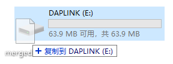

1、概述
该文档主要介绍桃芯科技 ING91881B 开发板的硬件资源及其使用方法，以使研发人员了解 ING9188 系列芯片的硬件资源，并测试其功能，使开发人员尽快掌握 ING9188 系列芯片的使用。
2、硬件资源
ING91881B 开发板见下图，主要包括温湿度传感器、加速度传感器、按键、LED、蜂鸣器等相关资源。
图 1 ING91881B 开发板
2.1、供电
ING91881B 开发板供电方式：通过开发板的 micro USB 接口供电。如果需要下载、调试程序，确保使用数据线，此时D2长亮；如果仅供电可使用充电线，此时D2闪烁。
开发板上留有 2.5V 对外供电接口（开发板右上角VCC丝印）和GND（开发板右上角GND丝印），供电时要注意电流限值：通过 micro USB 供电时，2.5V 电流限值是 200mA。
2.2、GPIO 功能
开发板下面排针为 ING91881B 芯片和板载外设引出的管脚，里侧管脚为 ING91881B 引出的管脚（丝印 GPIO 0-19 分别对应 ING91881B 芯片 GPIO 0-19，ING_DIO 和 ING_CLK 分别为 ING91881B 芯片的 SW_DIO 和 SW_CLK，EXINT 和 RESET 分别为 ING91881B 芯片的 EX_INT 和 RESET），靠近板边的管脚为温湿度传感器、加速度传感器、按键、LED、蜂鸣器等外设的管脚，具体对应查看开发板背面丝印。用户可以根据实际需要通过排线连接具体的外部设备，并通过软件配置相应的功能。若要使用开发板上的硬件资源，比如传感器、串口、蜂鸣器等资源，需要用跳线帽把对应位置短接。

图 2 GPIO 连接情况
有关 GPIO 的使用方法，可参考以下示例：
- HID Keyboard （蓝牙键盘示例）
- Peripheral ANCS （苹果通知中心服务）
2.3、调试接口
开发板集成了 DAPLink (CMSIS-DAP 的升级版) 功能， 支持 CDC 串口、拖放烧写。该功能通过一片 STM32 来实现，在开发板上的丝印为 U1，实际使用中通过 micro USB 接口与 PC 机通信， 虚拟出的串口端口号在 PC 机设备管理器中查看，使用此串口与 ING91881B 通信前，必须在 UART_TX 和 UART_RX 处用跳线帽短接。
DAPLink 的 SW_CLK 和 SW_DIO 与 ING918 的 SWD 接口使用跳帽连接，断开跳帽， 既可以将开发板用做 DAPLink 调试其它设备，也可以使用其它调试器来调试开发板。 STM32 芯片的 SW_CLK 和 SW_DIO 用插针引出，可以用来烧写STM32。
DAPLink 固件 开源。
2.4、IIC接口传感器
开发板自带两颗传感器，BME280 和 BMA280，IIC 接口，通过ING91881B 的 IIC1 接口互联，使用前需在 IIC_SCL 和 IIC_SDE 处用跳线帽短接。BME280 为湿度、压力、温度传感器，IIC 地址为：0b1110110；BMA280 为加三轴加速度传感器，IIC 地址为：0b0011000。
使用开发板IIC接口传感器时，需注意 ING91881B 开发板 IIC_SCL 和 IIC_SDE 分别配置在 GPIO10 和 GPIO11。
有关传感器的使用方法，可参考以下示例：
- Thermometer with FOTA （基于 BME280 的温度计）
- Peripheral Pedometer （基于 BMA280 的计步器）
2.5、LED
开发板上有 1 个三色 LED 和 8 个绿色 LED，三色 LED 可以用于 PWM 调光功能，绿色 LED 可以做为指示灯（低电平点亮）。使用前需要在开发板下面排针相应位置用跳线帽短接，三色 LED 通过专门的三色调光芯片 TLC57931，该芯片通过单线发送相应的控制命令，对应的信号为丝印 TLED。
有关 LED 的使用方法，可参考以下示例：
- Peripheral LED （通过 TLC57931 控制三色 LED）
2.6、按键
开发板上的按键分为两种：
-
系统按键
REST 复位按键，按下拉低，用于复位 ING91881B。
EX_INT 外部中断按键，按下拉高，用于唤醒睡眠的 ING91881B。
LOAD 下载键，烧写程序，LOAD 一键下载，下载程序时可以不用同时按 EXT_INT 和 RESET。
EXT_INT 和 RESET 用插针引出，可以通过跳线帽选择是由按键控制还是外部控制，按键也可以控制别的模块。
-
功能按键
KEY1-4 用户可以自行分配功能，位置见图 1 红色标志处所示，默认上拉，按下为低，使用前需在开发板下面排针相应位置用跳线帽短接。
有关按键的使用方法，可参考以下示例：
- HID Keyboard （蓝牙键盘示例）
- Peripheral ANCS （苹果通知中心服务）
2.7、蜂鸣器
开发板上包含 1 个蜂鸣器，工作频率 4KHz，使用前需在开发板下面排针相应位置用跳线帽短接。
有关按键的使用方法，可参考以下示例：
- Peripheral Piano （通过 PWM 驱动蜂鸣器）
2.8、ADC
开发板上留有 ADC 接口（开发板左上角丝印 AD1 AD4）， 用跳线帽短接时，输入电压为 1.65V（电压可调，调节R109电阻），为分压电阻从VCC 得到，用户也可以通过跳线外接其他输入，输入点为板内侧引脚。
有关 ADC 的使用方法，可参考以下示例：
- Peripheral Battery （通过 ADC 监测电压）
2.9、配置管脚
-
EXTINT为外置中断，用于在待机模式下唤醒 ING91881B，开发板上可以通过 BMA280 唤醒，也可通过 EX_INT 按键唤醒，通过 BMA280 唤醒时，用跳线帽把开发板右下角 J3 的 1、2 脚短接。
该信号有两种功能：
- 复位时使芯片进入烧写模式；
- 工作过程中用来将芯片从睡眠模式中唤醒。
2.10、芯片功耗测试
开发板中部偏上位置插针为芯片 ING91881B 供电端，正常使用时，用跳线帽短接。测试芯片 ING91881B 的供电电流时，把电流表串接在两端。
3、烧写程序
3.1、用 Flash Downloader 烧写
-
在 ingWizard 主界面找到要下载的项目，点击右键；

-
从弹出的快捷菜单中选择“Download to Flash…”，ingWizard 自动打开 Flash Downloader；
-
在 Flash Downloader 里点击“Setup UART”修改开发板使用的串口号；
-
点击“Start”；
-
按 LOAD 键 ，开发板即可进入下载模式（或者，保持开发板 EXT_INT 按键处于按下状态，按动一次 RESET）。下载过程中界面显示如图所示。
说明: 从复位状态释放时，Bootloader 会检测 EXT_INT，如果为高电平则进入 UART 下载模式，否则正常启动。 也就是说若要进入 UART 下载模式，要保证 RESET 按键弹起的瞬间， EXT_INT 按键处于按下状态。
3.2、使用调试器烧写
所有示例都可以在支持 CMSIS-DAP 的 IDE 直接通过 DAPLink 调试器下载，例如在 Keil 里直接点击“Download”。 如果开发者选择使用 J-Link 调试器，那么所有示例都可以在支持 J-Link 的 IDE 直接通过 J-Link 调试器下载， 例如在 Keil 里直接点击“Download”。
3.3、拖放烧写
DAPLink 调试器会在上位机里呈现一个 U 盘，将 .bin 文件或者 .hex 文件复制（通过命令行或者拖放）到 U 盘即可完成烧写。 烧写完成后，U 盘会重新挂载，查看 U 盘内的 DETAILS.TXT 文件，可发现 Remount count 计数增加 1。如果烧写失败，则会出现 FAIL.TXT 文件，里面包含了详细错误信息；如果烧写成功，U 盘内无此文件。无论烧写是否成功，重新挂载后的 U 盘都不会“保存” 所烧写的 .bin 文件或者 .hex 文件。

-
.bin 文件烧写
此模式只支持完整烧写，.bin 文件必须完整，同时包含 platform.bin 和 App Bin。建议通过 Flash Downloader 菜单项 File → Merge & Export … 自动合并导出完整 .bin 文件，然后烧写。
-
.hex 文件烧写
Intel Hex 文件包含地址信息，支持部分烧写。
4、注意事项
- 通过开发板给外部设备供电时，注意电流限值；
- 增减外部设备时，请断电；
- 不要用金属部件遮挡印制板天线。